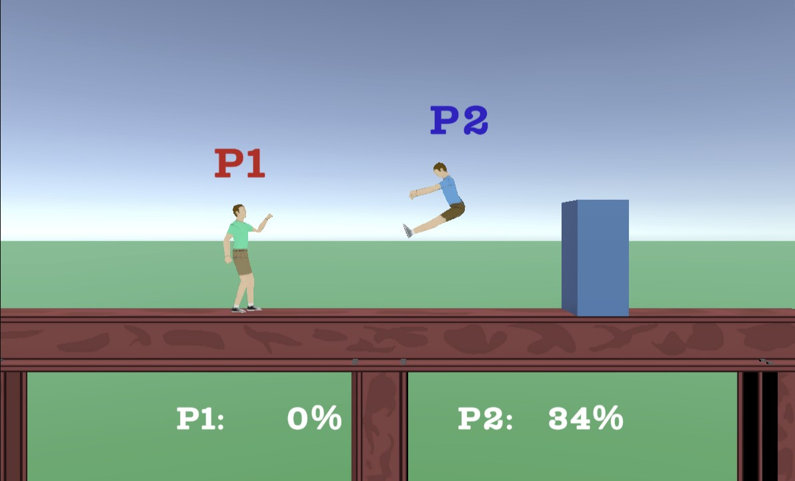
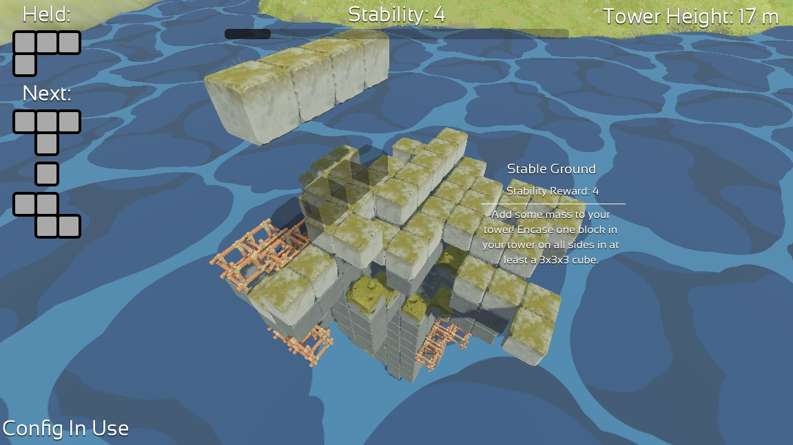
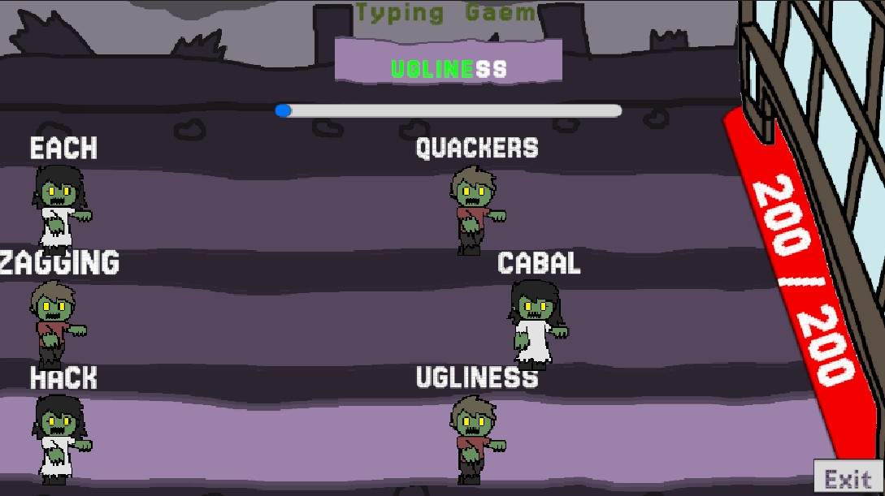

Projects
Here, you'll find all of the projects that I've worked with at the start of my time at UCI! There might be some other side projects that doesn't seem to have anything to do with my game dev journey at UCI, but I promise it does contribute to my current knowledge of game development.
UCI Game Projects
Happy FighterZ

This is a non-VGDC project that I feel is the best work I've done so far! It was created as a class project for my GDIM 33 (Coding in Game Engines) class, which I've done by myself. There, I learned visual scripting and used it for character movement, actions, and knockback scaling. Everything else was done using Unity C# scripts.
This might be the one project that I fully intend to continue developing, although I'm not sure if I will have enough spare time to work on it. As for continuing its development, I plan to migrate the project to Godot.
Tower of Genn

This is the second VGDC pitch project I've worked on, with. This time, the project was made in Godot, which I have some experience with before going in, but came out of it more enlightened. It's also here that I've gotten more comfortable with 3D games. Here, I've worked on having the tetrominoes rotate, implemented three side objectives (Stable Ground, A Perfect Match!, and Roughing Out Some Smooth Edges; all of those being my favorite tasks to do!), and programmed some UI, which are the settings menu and the tower height UI.
Typing Gaem

Yes, that is what the game is called. This VGDC intro project is the first project I participated in with a team, as I knew how to write code, but not in the context of game development and game engines (in this case, Unity). Here, I was responsible for much of the zombie's functionality, such as their movement, their ability to damage the base, and a little rework on the word generator to generate a word based on the starting letter. Additionally, it was here that I've felt my communication abilities shine.
Other Projects
Super Smash Wheels

This is one of those projects where I said it doesn't seem to have anything to do with game development, but does contribute to my game dev knowledge. Basically, I wanted to bring Super Smash Bros into Happy Wheels (hence the name), but more specifically I wanted to bring in Break the Targets from older Smash Bros titles, such as SSB Melee. I was on and off with this project for about 3 years due to the overall complexity of implementing the game mechanics using what the Happy Wheels level editor has to offer, such as the trigger tool for programming movement, connecting one system to another, and overall game logic. Over this level's development, I changed my approach to solving these problems multiple times, mostly because the overall system became a nightmare to actually build and manage.
I can't guarantee that the mechanics will work perfectly, due to the nature of Happy Wheels. But I hope you can see what I was going for! This is a published level, and you can play it by clicking on the following link: https://totaljerkface.com/happy_wheels.tjf?level_id=10742872